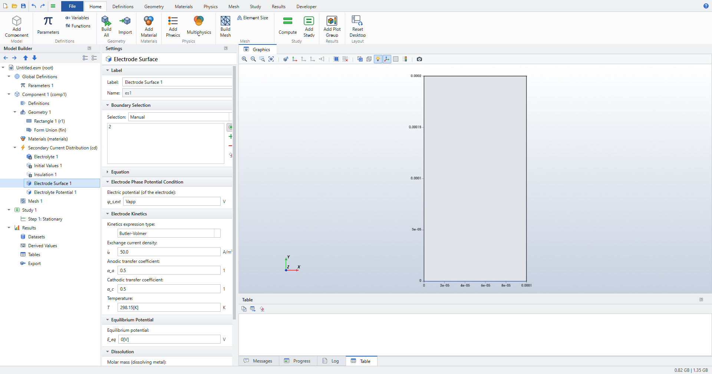
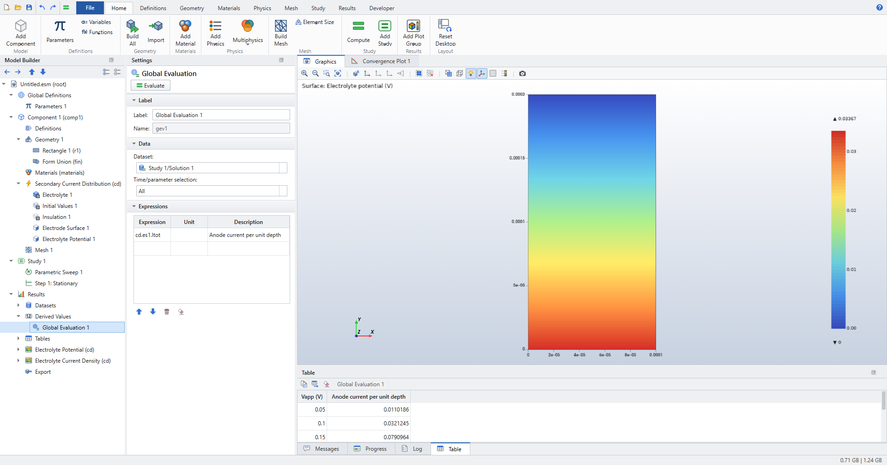
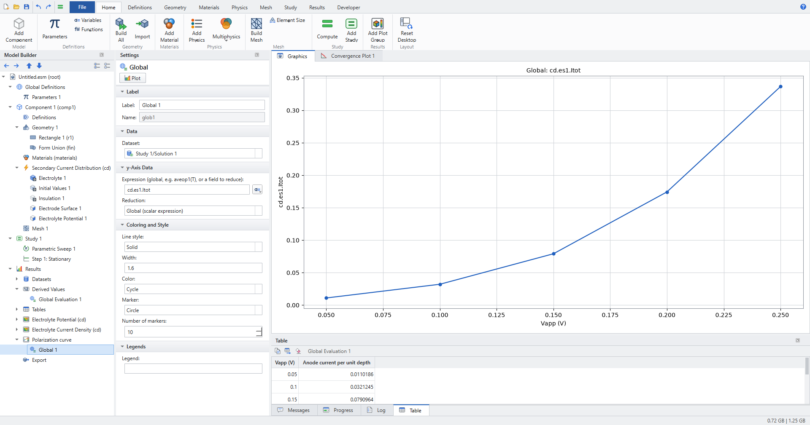
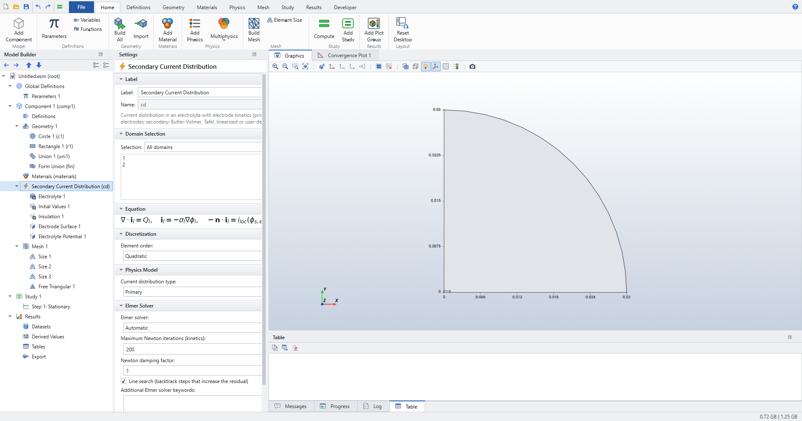
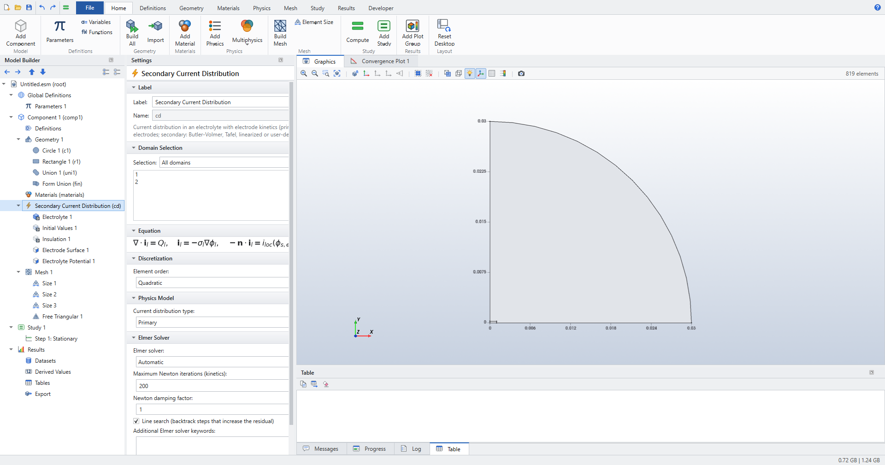
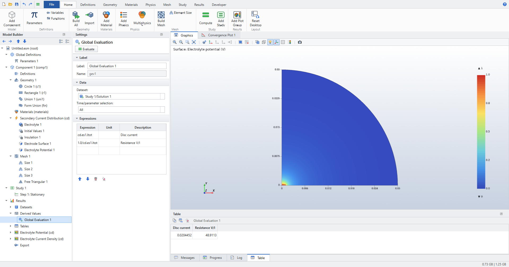

Electrochemistry: current distribution
Four small models, each with a closed-form answer, take you through the Secondary Current Distribution interface.
They are the models of the regression suite tests/test_electrochemistry.py, built here by hand in the GUI.
The numbers in each Check the results section are the ones the tests assert.
If you know COMSOL’s Electrochemistry Module, the workflow will feel familiar: same interface, feature and variable names. Elmer Studio is an independent project; the solver underneath is Elmer. Background on every feature is in Electrochemistry: current distribution.
-
Set up an electrolyte with an Electrode Surface (Butler–Volmer kinetics) and a counter electrode.
-
Read the electrode current
cd.es1.Itotwith a Global Evaluation. -
Compute a polarization curve with a Parametric Sweep and plot it.
-
Model a primary current distribution in 2D axisymmetry and refine the mesh at an electrode edge.
-
Couple the kinetics to a concentration with Transport of Diluted Species (tertiary current distribution).
-
Build a wavy electrode from a Parametric Curve and mesh it with a graded Mapped mesh.
Tutorial 1: a 1D cell with Butler–Volmer kinetics
A strip of electrolyte, 100 µm wide and L = 200 µm long, with conductivity σ = 20 S/m. The anode at the bottom has Butler–Volmer kinetics with i0 = 50 A/m² and αa = αc = 0.5 at 298.15 K. The top boundary is held at φl = 0, like a counter electrode with fast kinetics. The side walls are insulated, so the current flows straight up and the model is one-dimensional.
The current density is uniform, so the ohmic drop is iL/σ and the overpotential at the anode is η = V − iL/σ. The current density therefore solves
which has one root that you can find with any calculator.
Create the model
-
Choose (Ctrl+N) and click Model Wizard.
-
Click 2D.
-
Open Electrochemistry > Primary and Secondary Current Distribution, select Secondary Current Distribution and click Add.
-
Click Study, select Stationary and click Done.
Parameters and geometry
-
In the Model Builder, select Global Definitions > Parameters 1 and add the parameter
Vappwith expression0.1[V](description: cell voltage). -
Click . Set Width to
1e-4and Height to2e-4(the default length unit is m). -
Press F8 to build all. The Messages window reports 1 domain, 4 boundaries and 4 points.
Physics
-
Under Secondary Current Distribution, select Electrolyte 1. Set Electrical conductivity to
User definedand enter20[S/m]. -
Choose . Click the bottom boundary (boundary 2) in the Graphics window.
-
In Electrode Surface 1, set:
-
Electric potential (of the electrode):
Vapp -
Kinetics expression type:
Butler-Volmer -
Exchange current density:
50[A/m^2] -
Keep Anodic transfer coefficient and Cathodic transfer coefficient at
0.5, Temperature at298.15[K]and Equilibrium potential at0[V].
-
-
Choose , click the top boundary and keep Electrolyte potential at
0[V].
The side walls keep the default Insulation 1.

Note the electrode’s Name, es1, in the Label section.
Its results are called cd.es1.Itot, cd.es1.eta, and so on, as in COMSOL.
|
Compute one point
-
Click (Ctrl+=). The default mesh is fine: the solution is linear in y.
-
Click . In Expressions, enter
cd.es1.Itotwith the descriptionAnode current per unit depth, then click Evaluate.
cd.es1.Itot is a current per metre of depth in a 2D model, here 0.0321245 A/m.
Divided by the 100 µm width, that is i = 321.245 A/m².
Sweep the cell voltage: a polarization curve
-
Select Study 1 and click .
-
In Parametric Sweep 1, set Parameter name to
Vapp, Parameter value list torange(0.05,0.05,0.25)and Parameter unit toV. Keep Reuse solution from previous step atAutomatic: each voltage starts from the previous solution. -
Compute again.
-
Select Global Evaluation 1, check that Time/parameter selection is
Alland click Evaluate. The table now has one row per voltage.

-
With Global Evaluation 1 still selected, click . Elmer Studio adds a 1D Plot Group with a Global plot.
-
In the Global plot, set Expression to
cd.es1.Itot, Reduction toGlobal (scalar expression)and Marker toCircle, then click Plot. The x-axis is the swept parameter,Vapp (V). -
Rename the plot group Polarization curve (F2).

Check the results
| Vapp (V) | cd.es1.Itot (A/m) |
i = Itot / 100 µm (A/m²) | Ohmic drop iL/σ (V) |
|---|---|---|---|
0.05 |
0.0110186 |
110.186 |
0.00110 |
0.10 |
0.0321245 |
321.245 |
0.00321 |
0.15 |
0.0790964 |
790.964 |
0.00791 |
0.20 |
0.174406 |
1744.06 |
0.01744 |
0.25 |
0.336699 |
3366.99 |
0.03367 |
-
Every current matches the root of \(i = i_{loc}(V - iL/\sigma)\); the test requires 1e-8 and the run agrees to about 1e-12.
-
The maximum of the electrolyte potential at 0.25 V is the ohmic drop, 0.03367 V, on the anode.
-
cd.ilocat every anode node, corners included, equals i (to 1e-8), andcd.nIlon the top boundary carries the same current out. -
The curve rises monotonically and bends upward: Butler–Volmer kinetics dominate at low voltage, the ohmic drop grows with the current.
Try the other kinetics on the same cell: Linearized Butler-Volmer, Anodic Tafel equation, Butler-Volmer with limiting current (with Limiting current density 100[A/m^2]) or a primary electrode.
The regression test checks each one against the same equation, with the matching iloc(η), to 1e-9.
For a primary electrode, η = 0 and i = σV/L = 10 000 A/m² at 0.1 V.
|
For tabulated polarization data, add with Function name pol and the (η, i) pairs, choose Kinetics expression type User defined i(eta) and enter pol(eta).
On this cell, with the points (0, 0), (0.05, 40), (0.1, 150), (0.2, 600), (0.3, 2000) and Vapp = 0.3 V, the current agrees with the piecewise-linear root to 1e-6.
|
Tutorial 2: Newman’s disc electrode (2D axisymmetric)
A disc electrode of radius a = 1 mm lies flush in an insulating plane, under an electrolyte with σ = 5 S/m. For a primary current distribution, Newman’s classic result for the resistance between the disc and infinity is 1/(4σa). Here the counter electrode is a hemisphere of radius R = 30 mm, which removes the far-field part 1/(2πσR):
At 1 V on the disc the current is 1/Rcell = 0.020434 A. The current density is singular at the disc edge, so this model is a test of the mesh as much as of the physics.
Create the model and geometry
-
Choose , Model Wizard, 2D Axisymmetric, add Secondary Current Distribution, choose Stationary and click Done. The r axis is horizontal and z vertical.
-
Click . Set Radius to
0.03and Sector angle to90: a quarter disc that becomes a hemisphere when revolved. -
Click . Set Width to
1e-3and Height to2.5e-4. This small rectangle only splits the bottom boundary at r = a, so the disc is a boundary of its own. -
Click and select both objects as Input objects. Keep Keep interior boundaries on.
-
Press F8.
Physics
-
Select Secondary Current Distribution and set Current distribution type to
Primary. -
In Electrolyte 1, set Electrical conductivity to
User defined,5[S/m]. -
Add on the disc, the bottom boundary from r = 0 to r = a (boundary 2). Set Electric potential (of the electrode) to
1[V]. The kinetics settings are ignored for a primary distribution. -
Add on the quarter-circle arc and keep
0[V].
The rest of the bottom and the symmetry axis keep the default Insulation 1.

Mesh
The geometry is 30 mm across and the singular edge needs elements of a few micrometres.
-
Click . Elmer Studio switches Mesh 1 to a user-controlled mesh and adds Size 1, Free Triangular 1 and a second Size node, Size 2.
-
In Size 1 (Geometric entity level
Entire geometry), set Element size toCustomand:-
Maximum element size:
0.0025 -
Minimum element size:
2.5e-6 -
Curvature factor:
0.3 -
Resolution of narrow regions:
1 -
keep Maximum element growth rate at
1.3.
-
-
In Size 2, set Geometric entity level to
Pointand select the point at r = a, z = 0 (the disc edge). Set Element size toCustom, Maximum element size5e-6, Minimum element size2.5e-6. -
Click again for Size 3. Set Geometric entity level to
Boundary, select the disc (boundary 2), Element sizeCustom, Maximum element size4e-5, Minimum element size2.5e-6. -
Click .

| The Maximum element growth rate grades the local sizes into the domain. Without it, a refined disc edge sits inside coarse elements; during development that put the disc resistance off by 6 to 46 %. |
Compute and evaluate
-
Compute (Ctrl+=).
-
Click and enter two expressions:
-
cd.es1.Itot, descriptionDisc current -
1/cd.es1.Itot, descriptionResistance V/I(the disc is at 1 V)
-
-
Click Evaluate.

-
Click . In a 2D model this boundary integral is called Line Integration. Select the disc boundary, enter
cd.ilocand click Evaluate. Compute integral in revolved geometry is on by default, so the result is the disc current again.
Check the results
-
cd.es1.Itot= 0.020445 A and V/I = 48.911 Ω, against 48.939 Ω from the formula: about 0.06 % low. The regression test requires better than 0.5 %. -
The Line Integration of
cd.ilocover the disc, in the revolved geometry, equalscd.es1.Itot(the test requires 1e-9). -
cd.es1.Itotalready includes the factor 2π of the revolution: Elmer’s axisymmetric loads are per radian.
Tutorial 3: tertiary current distribution in a Nernst layer
This model adds a concentration to the kinetics. The same 1D cell geometry idea is used: an anode at the bottom, a reference at φl = 0 at the top, L = 200 µm apart. The first δ = 2 µm above the anode are a Nernst diffusion layer; above it the bulk is well mixed at concentration cb.
-
Kinetics are linear: iloc = (σ/Λ) η, a charge-transfer resistance Λ/σ with Λ = 15 µm.
-
The dissolved product (ν = 1, n = 2) accumulates in the layer and raises the equilibrium potential by the linearized Nernst term \(E_{eq} = \frac{RT}{nF}\,\frac{c-c_b}{c_b}\).
-
cb is chosen so that the concentration resistance equals that of a layer βδ thick, with β = 2.
Three resistances in series give
With σ = 20 S/m, V = 0.02 V and D = 1e-9 m²/s, that is i = 1826.48 A/m². Without the concentration term it would be 1860.47 A/m².
Create the model
-
, Model Wizard, 2D.
-
Add Electrochemistry > Primary and Secondary Current Distribution > Secondary Current Distribution and Chemical Species Transport > Transport of Diluted Species.
-
Choose Stationary and click Done.
-
In Parameters 1, enter:
Name Expression Description sig20[S/m]Electrolyte conductivity
Vc0.02[V]Electrode potential
Lam15e-6[m]Polarization length Λ
Dc1e-9[m^2/s]Diffusion coefficient
nel2Electrons per reaction
cb665.712[mol/m^3]Bulk concentration (β = 2)
Tk298.15[K]Temperature
-
Add two rectangles with :
-
Rectangle 1 (Nernst layer): Width
20e-6, Height2e-6. -
Rectangle 2 (bulk): Width
20e-6, Height198e-6, y2e-6.
-
-
Press F8. The geometry has two domains that share the boundary at y = δ.
Current distribution
-
In Electrolyte 1, set Electrical conductivity to
User definedandsig. -
With Secondary Current Distribution selected, choose and select the bottom boundary (y = 0). The Physics ribbon adds features to the interface that is selected in the Model Builder, or that contains the selected feature. Set:
-
Electric potential (of the electrode):
Vc -
Kinetics expression type:
User defined i(eta) -
Local current density i(eta):
sig/Lam*eta -
Equilibrium potential:
R_const*Tk/(nel*F_const)*(c-cb)/cb
-
-
Add an Electrolyte Potential on the top boundary (y = 200 µm),
0[V].
Species transport
-
Select Transport of Diluted Species. In Domain Selection, choose
Manualand keep only the thin lower domain, the Nernst layer. -
In Transport Properties 1, set Diffusion coefficient to
Dc. -
In Initial Values 1, set Concentration to
cb. -
Right-click Transport of Diluted Species and choose Boundaries > Electrode Surface Coupling. Select the anode (y = 0) and set:
-
Electrode surface (name of a Current Distribution feature):
es1 -
Stoichiometric coefficient:
1 -
Number of participating electrons:
nel
-
-
With Transport of Diluted Species selected, add on the boundary between the layer and the bulk (y = δ), with Concentration
cb.
Study and compute
-
Select Step 1: Stationary and set Max coupling iterations to
100and Coupling tolerance to1e-11. Keep Coupling damping factor at1. -
Compute.
-
Evaluate
cd.es1.Itotwith a Global Evaluation. -
Click (in 2D: Surface Maximum), select the Nernst layer domain and evaluate
c.
Check the results
-
cd.es1.Itot= 0.0365297 A/m, that is 1826.48 A/m² over the 20 µm width, equal to σV/(L + Λ + βδ) to 1e-8. -
The maximum of
c, on the anode, is cb + iδ/(nFD) = 684.64 mol/m³ (the test requires 1e-6). -
The current is 1.8 % below σV/(L + Λ): the concentration resistance is there.
| If a coupled model oscillates instead of converging, lower the Coupling damping factor. A loop gain G > 1 between the two interfaces needs a factor below 2/(1 + G). |
Tutorial 4: current modulation over a sinusoidal anode
A wavy anode y = a cos(kx), with amplitude a = 1 µm and wavelength λ = 100 µm, faces a flat counter electrode L = 200 µm away. For a primary distribution and a small amplitude, Wagner’s analysis gives a current density of the form i0(1 + m cos kx), with
Here m = 0.06283: the crests, nearer the counter electrode, carry 6.3 % more than the mean.
Geometry from a parametric curve
-
Create a 2D model with Secondary Current Distribution and a Stationary study.
-
Select Geometry 1 and set Length unit to
µm. -
In Parameters 1, add
lam=100,a0=1andL=200. Plain numbers in geometry settings are in the geometry length unit. -
Click . Keep Parameter name
sfrom0to1, and set x tolam*s, y toa0*cos(2*pi*s)and Number of interpolation points to81. -
Click . Set Type to
Open curve, x tolam lam 0 0and y toa0 L L a0. The polygon runs from the end of the wave up the right side, across the top and down the left side to the start of the wave. -
Click and select the curve and the polygon as Input objects.
-
Press F8. The geometry has 1 domain, 4 boundaries and 4 points: the wavy anode (boundary 1), the left side (2), the top (3) and the right side (4).
Physics and mesh
-
Set Current distribution type to
Primaryand Electrical conductivity in Electrolyte 1 toUser defined,20[S/m]. -
Add an Electrode Surface on the anode with Electric potential (of the electrode)
0[V]. -
Add an Electrolyte Potential on the top with
-0.02[V]. -
Click . The mesh becomes user-controlled with Size 1, Free Triangular 1 and Mapped 1. Select Free Triangular 1 and press Delete.
-
Add three Distribution nodes with :
-
anode and top (boundaries 1 and 3): Number of elements
80; -
right side (4): Number of elements
60, Element ratio20; -
left side (2): Number of elements
60, Element ratio20, Reverse direction on.
-
-
Build the mesh (). Opposite sides have the same counts, as a Mapped mesh requires. The element ratio grades both sides so that the smallest elements are at the anode; if the Graphics window shows the grading the wrong way on a side, toggle its Reverse direction. It has 80 × 60 = 4800 quadratic quadrilaterals; shows the counts.
Compute and check the results
Compute, then evaluate cd.es1.Itot with a Global Evaluation.
-
cd.es1.Itot= 0.2000 A/m, the flat-cell value σ·0.02 V/L·λ, to 0.02 % (the test requires 0.1 %). -
The nodal
cd.ilocon the anode ranges from about 1875 A/m² in the troughs to 2126 A/m² on the crests. -
The regression test fits i0 + i1 cos kx through the anode values: i1/i0 matches a k coth(kL) = 0.06283 within 0.02 % (the test requires 0.2 %).
To sweep the amplitude, for example a0 = 1 0 µm, select the electrodes with Box Selections (, y maximum L/2 for the anode, y minimum L/2 for the top) instead of boundary numbers.
A change of shape can renumber the boundaries (the regression test sees this when the amplitude of a wavy anode goes to zero); Box Selections are re-evaluated on every run’s geometry.
See Electrochemistry: current distribution.
|
Where to go next
-
Electrochemistry: current distribution explains every feature, the Newton–Robin solution of the kinetics and the coupling settings.
-
Secondary Current Distribution (cd) and Transport of Diluted Species (tds) list all settings with their defaults.
-
Studies and solving covers parametric sweeps in general.